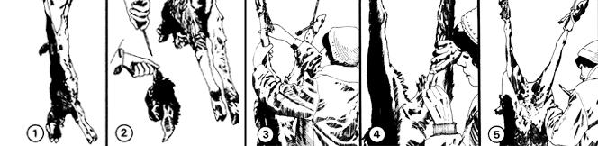
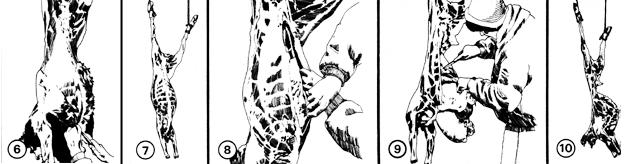
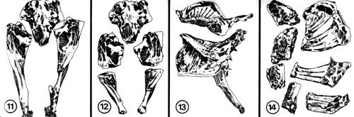

Although we're now settled on a small spread in New Mexico, this particular back-to-the-land family actually learned to butcher goats about five years ago when we lived on a little farm in Missouri. We bought two milk goats with two kids apiece that spring . . . one of those kids was a buck . . . and that buck was destined for the pot from the beginning.
When folks "who knew" heard about our plans, they all told us that we should castrate the buck if we planned to eat him. So, when the kid was about three months old, we had him clamped. This is an operation performed with a huge pair of pinchers that crush the cords linking the testicles with the body. (Once the cords are pinched in this manner, the testicles gradually atrophy during the next couple of months.)
Clamping certainly seems to cause a buck a lot less pain than I had feared, and I highly recommend this form of castration over "cutting" (which is the actual removal of the testicles with a knife, a method that carries the attendant twin risks of blood loss and infection). On the other hand, we now know that there's no need to castrate a buck goat at all if you plan to butcher him before he matures . . . which is the way we've learned to handle the situation.
The kids were already six weeks old when we bought them, and they'd been nursing all that time. We knew that weaning was going to be a problem and we lost no time in getting started on the job.
For a month we allowed the kids to nurse only at night and kept them separated from their mothers during the day. After that, we fed the young goats a little 16% dairy ration and milk to supplement their pasture . . . and kept them away from the does at all times. Their nursing habit was so strong, however, that it was a total of four more months before they could be turned back in with the mothers without trying to suck. Moral: If you plan to wean your goats, wean them early.
So many people told us that we should fatten our butchering buck up before killing him that I finally performed a rough-and ready feeding experiment on the animal. For three monthsstarting when he was six months old-I fed him three times as much grain (half corn and half dairy ration) as his twin sister received.
Both goats were about the same size at the beginning of this rather heavy-handed test. And, after consuming 1-112 quarts of grain a day for 90 days (while his sister was being fed only onehalf quart of grain a day), the buck was noticeably stockier than the doe. Then again, he certainly wasn't enough heavier to justify all the extra grain he'd eaten. Dairy goats, in shortjust like dairy cattle-have (obviously) not been bred for meat production and you're largely wasting your money when you try to push pounds onto such an animal. Pour that extra feed to a hog or a beef cow if you want to see real results. Or quit raising livestock altogether and just eat the corn, wheat, oats, etc., yourself.
Partly as a result of this experiment and partly because of the money I was spending at the time on feed and fertilizer in general, I began to understand food chains and pyramids of life for the first time. The bottom line of the whole experience can be
summed up in one sentence: You can feed plants for a small fraction of what it costs you to feed animals.
I've become a disciple of the Hohenheim System (developed in Germany in 1916) of pasture management. It provides dairy cattle with all the nutrients they need for good health and optimum milk production (while the animals eat only pasture and no supplemental grain at all), and I think it works just as well for goats.
The keys to the Hohenheim System are [1] heavy applications of nitrogen-which can be provided at almost no cost by growing thick stands of legumes right in among a pasture's grasses -and [2] moderate grazing, which leaves the pasture at least four to five inches tall all summer.
This, of course, is a far more conservative approach to grass farming than the methods employed by many of the "anything for a fast buck" agribiz operations that now dominate this nation's agriculture.
Back in the Ozarks where we used to live, for example, a great many of the beef cattle operations have degenerated into technologically advanced versions of essentially primitive slash-andburn farming techniques. A big operator will spray 160 acres of woods with herbicides to kill the trees, bulldoze them into windrows and burn them, spread chemical fertilizer over the barren land that's left, plant grass, and graze the hell out of it. There are big, quick profits to be made this way, but the forest is fast disappearing and I'm not at all sure that the "new" pastures created in this manner are going to be worth a whole lot in a few years.
I much prefer the Hohenheim management principles I've learned: Add lime to your pasture if it needs it and then seed in sweet clover and other legumes. Spread on manure and whatever additional "organic" fertilizers you have on hand to feed the grasses and legumes, and then use chemical plant foods sparingly and only to fill in the gaps that a lack of natural fertilizers keep you from filling "organically". And don't overgraze. The result will be a pasture that not only contains more plants per square yard ... but healthier plants which contain more nutrients.
We slaughtered our buck when he was nine months,old. A messy experience with another goat a few weeks earlier had taught me that trying to knock an animal unconscious with a sledge isn't as easy as the TV westerns would have you believe. This time I neatly felled the buck with a single 20-gauge shotgun slug to the head from a distance of 10 feet. He lost consciousness instantly.
I immediately cut the goat's throat "from ear to ear and clear to the bone" with a sharp knife and we quickly hung him up by the hind feet to bleed.
In some parts of the world it evidently used to be (and maybe still is) a common practice to hang a live goat up by its hind legs first and then cut its throat . . . in the apparent belief that a conscious animal will bleed better than an unconscious one. This is unnecessary and cruel. Kill your animal clean and hang it up fast . . . and you'll have no trouble getting a rapid drainage of blood from the meat.
It's traditional to hang an animal for butchering by making a cut between the tendon and bone on each hind leg and inserting a rope or hook. We find, however, that this is not at all necessary for anything as small as a goat and we hoisted the buck (Fig. 1) by simply tying a length of clothesline around each of his rear legs. Hang your goat from a handy tree limb at a convenient working height so you'll have easy access to both sides of the carcass as you dress it out.
I once watched an old-timer butcher a goat and, after hanging it, he cut a slit about six inches long in the abdominal wall (taking care not to puncture the stomach, intestines, and other organs inside). Then he poured in a bucket of cold water to cool the animal's meat more rapidly. This is a good idea and I use it.
At this point I also saw off a goat's horns (if it has any) with a hacksaw and keep them for the later manufacture of buttons, knife handles, and other homestead shop artifacts. I then cut the head (Fig. 2) and the forefeet (about four to six inches above the hooves) completely off the carcass. (The brains and the tongue of a goat can be eaten and, in India, both the head and the forelegs are considered a delicacy. If you're not quite up to that yet, though, you can throw these parts of the carcass to the dogs. They'll enjoy them immensely.)
Skinning a goat-or most any animal-isn't as complicated as it may seem. Think of it as being closely akin to peeling a banana and you'll be on your way to putting the task into its proper perspective. If the job still scares you, get an old-timer to lend a hand the first time you butcher a goat. Or practice on a rabbit or two. The technique used in skinning out a rabbit is very much the same as that used in skinning out a goat . . . but rabbits are so small that the task doesn't feel quite so overwhelming the first time you run through it on one of them.
My wife, Judy, and I share our skinning duties, since they go much faster when two people handle them together. Judy, however, used to enjoy her biology class dissecting exercises (I never did), and she-as the enclosed drawings show-usually guts out our kills by herself.
There's no substitute for a good, sharp knife when it comes to skinning a goat! Keep that in mind, and the whole job will go a lot easier.
Start by making a cut completely around the ankle of each hind leg and about two inches below the first joint (Fig. 3). Try to slice just deep enough to completely penetrate the skin, without cutting into the meat underneath. Then make a long cut down the inside of each leg (Fig. 4) until the two cuts meet at the crotch.
Again, try not to let your knife dig into the meat . . . but do slice completely through the skin. This can sometimes be done much easier-once a cut is started-by holding your blade so that its edge points out (toward the skin) and then pushing it along with a slight rotary motion of the wrist so that the knife's point runs neatly along and just above the fell-or protective membranewhich covers the meat immediately beneath the hide. This-and some of the steps which follow-may sound complicated, but they're really pretty easy once you start doing them.
When you've completed the "V" cut down the inside of the rear legs, start working the skin off those legs by gently pulling on the hide while using the tip of your knife to free it as you go.
Relax, take your time, think of the job as "peeling a banana" . . . and .you'll probably make better time than if you get all tensed up and take the task too seriously. So what if you do slice into the meat occasionally or nick the hide once or twice the first time you try to butcher? A little experience will polish your technique. The important thing right now is just to prove to yourself that you can do it.
OK. Once you get the hide off the hind legs, you'll be ready to work on the crotch. This is the hardest part and it's best (at least the first time you try it) to just cut the tail off at its base and get it out of the way. Then cut back from the point of the " V" you made down the inside of the hind legs . . . around the anus in back and down around the genitals in front.
If you'll now pull down hard on the loose hide from the legs, and use an occasional touch of the knife when necessary (Fig. 5), the skin will turn wrongside out and slip right off most of the body. Some people prefer to leave the torso hide uncut during this operation (to keep loose hairs off the body meat as it is increasingly exposed) . . . but we like to slit the hide right down the middle of the belly (Fig. 6) before we pull it off.
When we reach the forelegs with this cut, we make a slit down the inside of each leg (just as we did down the inside of the hind ones), and continue peeling the skin off in one piece. As the edge of the hide nears the ground, we slip a board or some old sacks under it to keep it out of the dirt. It's also a good idea to wash your hands in clean, warm water from time to time during this skinning process to keep loose hairs and stains off the carcass.
It was cold (35° and windy) the day we butchered our first buck. By the time we'd worked our way down to the dewlap, our hands were getting numb and the carcass was starting to stiffen. The hide-which had slipped so easily from the firm flesh of the torso-now refused to peel at all from the floppy dewlap. We had to cut it every inch of the way. But we persevered . . . and it really wasn't too long until we had a beautiful goat hide off, all in one piece and ready to tan (but that's another article). The carcass was bare (Fig. 7).
As soon as the hide was off, Judy took over and began to gut the goat.
Fist she cut down the length of the carcass's belly- from its pelvis to its breastbone-taking special care not to puncture the intestines and stomach (Fig. 8). Again, note that this cut, once started, is much easier to control if your knife is turned so that the edge of its blade faces out. The fingers of the left hand (if you're right-handed) can then be inserted into the cut as it's made to steady the carcass and hold the internal organs away from the blade as the right hand guides the knife. (The intestines will sag somewhat as this cut is made, but they're supported by membranes and they won't fall out.)
Judy then made a second and lateral cut through the belly wall and flanks of the carcass . . . all the way around to the backbone on each side. This gave her easy access to the internal organs and she began to cut the intestines and bladder loose from the pelvis (taking great care, of course, not to puncture them). She finally cut the lower end of the intestines and urinary canal completely free by running her knife around the patch of skin we had left surrounding the anus and genitals as we skinned the goat. Then she pulled downward gently on the mass of guts and worked them loose from the inside of the pelvis with her knife.
Judy next pushed the freed intestines to one side and cut the supporting membranes which anchored them-and the stomach, etc.-- to the backbone and back muscles. Then she pushed them to the other side (Fig. 9) and cut the remaining membranes. It's easy to overlook a few of these supporting tissues and you might have to repeat this step a couple of times until you get 'em all. Judy also advises that you may have to "tilt the intestines forward" somewhat before you'll be able to get to some of the really hard-to-reach membranes along the backbone. Be careful when you do this, or you may wind up spilling everything on the ground.
Once the supporting membranes were all severed, Judy laid the contents of the abdomen out on a sheet of plastic and sorted out the organs we wanted to save. The liver looked exactly like raw liver and she carefully cut away the bile sac attached to it. (The bile sac is a finger-shaped, transparent, greenish gland filled with an extremely bitter fluid. If you should puncture the sac, wash the spilled liquid off the liver immediately.)
The pancreas (sweetbread) is near the liver and looks somewhat similar . . . except that it's smaller, has only one lobe, and is spotted. Judy also saved the kidneys. They're found among the fat and membranes attached to the backbone, are likely to be completely covered by fat, and look like giant gray kidney beans.
That took care of the abdomen, and our gutted goat looked like Fig. 10.
Judy started on the buck's chest by cutting through the diaphragm. She immediately found the heart in a lump of fatty tissue near the esophagus and she saved it. (We later ate it as stuffed goat's heart, which is a gourmet's treat. All the internal organs we tried, as a matter of fact, were delicious and it's a shame that most affluent Americans will eat only liver . .. if they'll eat any organ meat at all.)
The lungs looked like bright pink sponges and Judy found them easy to remove. Then she cut the windpipe and esophagus loose all the way up the backbone (by reaching down inside the rib cage with her knife) and worried them out.
The quick, hard work was now over and we took a break for a few days while our goat carcass aged and naturally tenderized itself. (If you insist on cutting up, packaging, and freezing a goat on the same day you butcher it . . . well, don't be surprised if the meat comes out stringy and far chewier than you'd have preferred.)
We certainly had beautiful hanging weather-a solid week of gray, fall drizzle that didn't get much above or below freezingbut we didn't do too good a job of hanging our buck's carcass the first evening: We left it suspended about four feet off the ground and our dog must have spent the whole night jumping up and nipping off bits of meat. The neck and forelegs-but, luckily, none of the choicer cuts of the goat-were shredded into ribbons the next morning when we got up. Naturally, we raised the buck's carcass a few more feet off the ground before letting it age another five days.
SPECIAL TIP: If you butcher when the weather isn't chilly enough to allow you to age a carcass outside, you can quarter your meat and age it in a refrigerator. It may be a little unhandy,
but the fridge will do the job . . . and it'll sure solve the "jumping dog" problem in the bargain.
After our buck had aged for six days (to be honest, a couple of days longer than we'd planned), we finally got caught up enough to cut it into manageable pieces and package it for the freezer. And, right or wrong, we did it our way . . . instead of following the "proper" esoteric traditions of "real" butchers who always seem to delight in sawing and cutting their way through the greatest quantity of bone possible. That may be the "proper" way to do the job . . . but it's not the way for us.
What we did was, first, we cut the goat in half. Not by sawing down the length of the spine and breastbone to split the carcass lengthwise. But by simply cutting through the spine (between a couple of vertebrae) just in front of the pelvis, where Judy had already almost cut the goat in two while gutting it. This left us with two halves-a front and a rear-each of which was just the right length to fit on top of our kitchen counter.
Judy cut up the rear half first by separating the legs from the pelvis at the hip joints (Fig. 11), and then (Fig. 12) cutting the legs at each joint. The joints contained little prongs and flanges of bone which made it difficult to get a knife into them. But they were broken fairly easily by forcing the joints to bend opposite their natural direction of travel. Orthodoxy, of course, would have you split a goat's pelvis in half before it's packaged for the freezer. . . but we left ours whole.
Judy had no more trouble cutting up the front half of our buck than she'd had with the rear. She started by splitting the rib cage up the front, and cutting along just beside the breastbone where the ribs join it (ribs aren't very hard to cut along their ends). Then she did the same in the back along the spine (Fig. 13).
Next, she cut the arms off the forequarters by lifting each one away from the ribs and slicing through the connecting muscles (since the arms aren't attached to the rest of the skeleton by a joint). The forelegs were then cut at the joints just like the hind legs had been.
My wife next cut the neck off between two vertebrae (and left it whole for a roast), cut the spine into sections for soup, and divided the ribs into three- and four-rib pieces for spare ribs (Fig. 14). Everything was then washed well, double-wrapped in freezer paper, and frozen.
We enjoyed that buck's meat-tender, juicy, delicious, and free of antibiotics and other agribiz chemicals-for months. And every morsel was more real to us than any supermarket steak we've ever eaten . . . since we had been intimately involved with every single step of the weaning, fattening, killing, and butchering of the animal.
We've been just as involved with the raising and butchering of other goats and livestock during the five years since we processed that buck . . . and we've always enjoyed the meat just as much.
No, we don't say that everyone should eat meat . . . or even that we'll always eat meat. But we do think that there's a lot to be said for the meat-eaters among us who are willing to take responsibility for every step in the long chain of events that puts those steaks, hams, and roasts on so many of our tables.
If you're a meat-eater and you're just beginning to assume that kind of responsibility, we hope this article has been of help to you.
The cook was cutting up an ox for the ruler Wen Hui. Whenever he applied his hand, leaned forward with his shoulder, planted his foot, and employed the pressure of his knee in the audible ripping off of the skin and slicing operation of the knife, the sounds were all in regular cadence. Movements and sounds proceeded as in the dance of "The Mulberry Forest" and the blended notes of "The Ching Shou''.
The ruler said "AH! Admirable that your art should have become so perfect!"
Having finished his operation, the cook laid down his knife and replied, "What your servant loves is the method of the Tao, something in advance of any art.
"When I first began to cut up an ox, I saw nothing but the entire carcass. After three years I ceased to see it as a whole. Now I deal with it in a spirit-like manner and do not look at it with my eyes. The use of my senses is discarded and my spirit acts as it wills. Observing the natural lines, my knife slips through the great crevices and slides through the great cavities, taking advantage of the facilities thus presented. My art avoids the joints or tendons and, much more, the great bones.
"A good cook changes his knife every year: it may have been injured in cutting. An ordinary cook changes his every month: it may have been broken. Now my knife has been in use for nineteen years. It has cut up several thousand oxen, and yet its edge is as sharp as if it had newly come from the whetstone.
"There are the interstices of the joints, and the edge of the knife has no appreciable thickness. When that which is so thin enters where the interstice is, how easily it moves along! The blade has more than room enough.
"Nevertheless, whenever I come to a complicated joint and see that there will be some difficulty, I proceed anxiously and with caution, not allowing my eyes to wander from the place and moving my hand slowly. Then by a very slight movement of the knife, the part is quickly separated and drops like a clod of earth to the ground.
"Then, standing up with the knife in my hand, 1 look all round. And, in a leisurely manner . . . with an air of satisfaction . . . wipe it clean and put it in its sheath. "
Chuang Tzu (369 ([?]-286[?] B.C.). From Taoist Tales, edited by Raymond Van Over, New American Library, copyright 1973, reprinted by permission.
|
 ILLUSTRATION BASED ON PHOTOS BY THE AUTHOR |
 |
 |